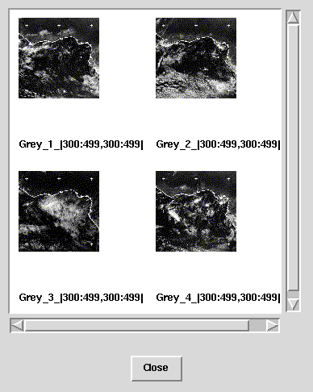

Trimming the results
The resulting collection can be filtered by the server in various ways.
For example the domain (a rectangular area described by two diagonal vertices)
can be trimmed to arbitrary size and dimensionality using the trimming
operator
[dim1, ... ,dimN]. The dim_i may
be either pairs of l_i:h_i for specifying a range of coordinates
in dimension
i or a single proj_i for projecting the result
in dimension i to coordinate proj_i, thus reducing the result's
number of dimensions by 1. The l_i and h_i can in turn be
a number for a fixed boundary or an asterisk for a free one.
Examples:
When applied to the images from the last page over the domain [0:799,0:799]
the following trimming operators yield these results:
-
[400:799,0:399]: the upper right quarter of the image, 2D.
-
[300:499,300:499]: a 200 * 200 area in the center of the image,
2D.
-
[400:400,0:799]: despite the identical values for l_1 and
h_1
this is a 2D object, but the only one legal value for the first coordinate
is 400.
-
[400,0:799] or [400,*:*]: a projection to x=400. The
result is a 1D object with the domain [0:799].
-
[400,400]: the point at 400,400 encoded as 0-dimensional object
(not a scalar).
The trimming operator can be applied to any MDD object. It usually results
in more efficient query processing because
-
due to tiling the server can discard those tiles of the MDD objects that
aren't contained in the trimmed area, thus speeding up the server and
-
since the data volume is decreased transfer times are going down. This
also requires less memory in the client which makes it possible for thin
clients to work on huge data cubes as long as the actual area of interest
is small enough.
Now for an example query:
SELECT img[300:499,300:499]
FROM earth AS img
returns the following result:

02-Mar-1998